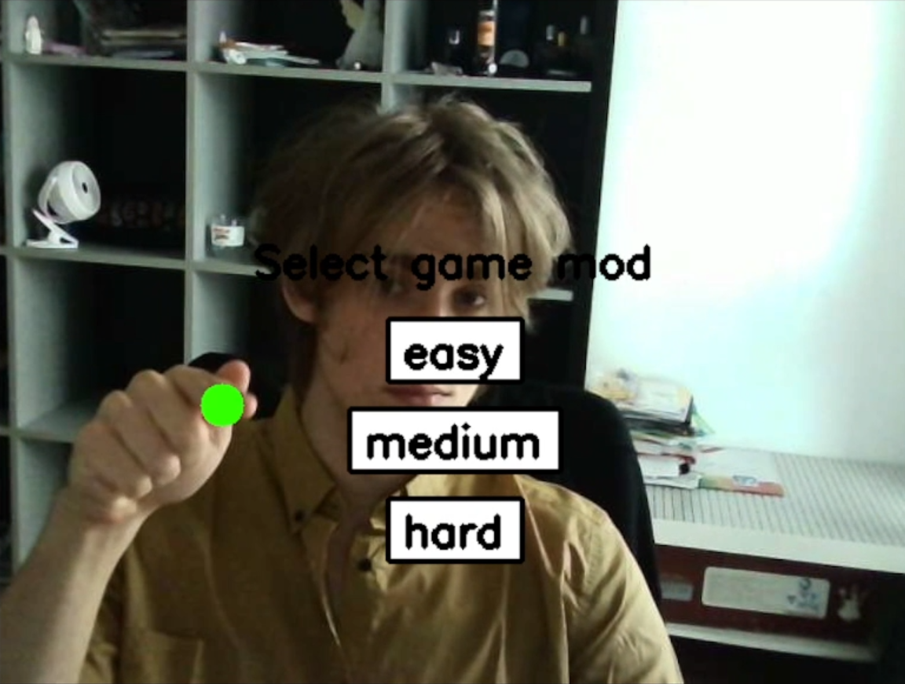
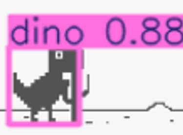

My projects

Hand Tracking Game
In this project, I used MediaPipe to track my fingers, capture their coordinates, and work with them. I also used OpenCV (cv2) to display the text. In the end, the game became more entertaining with speed acceleration

DinoYolo
In this project, I implemented several algorithms using YOLO to detect potential obstacles, capture their coordinates, and take appropriate actions. The main highlight is that I also created a detailed PDF tutorial explaining how easy it is to build this system.

Superstore Sales Dashboard
In this project, I created a visually appealing Superstore dashboard using Plotly Dash. It features multiple sections and interactive callback functions, allowing users to explore a wealth of insightful and stunning data visualizations.